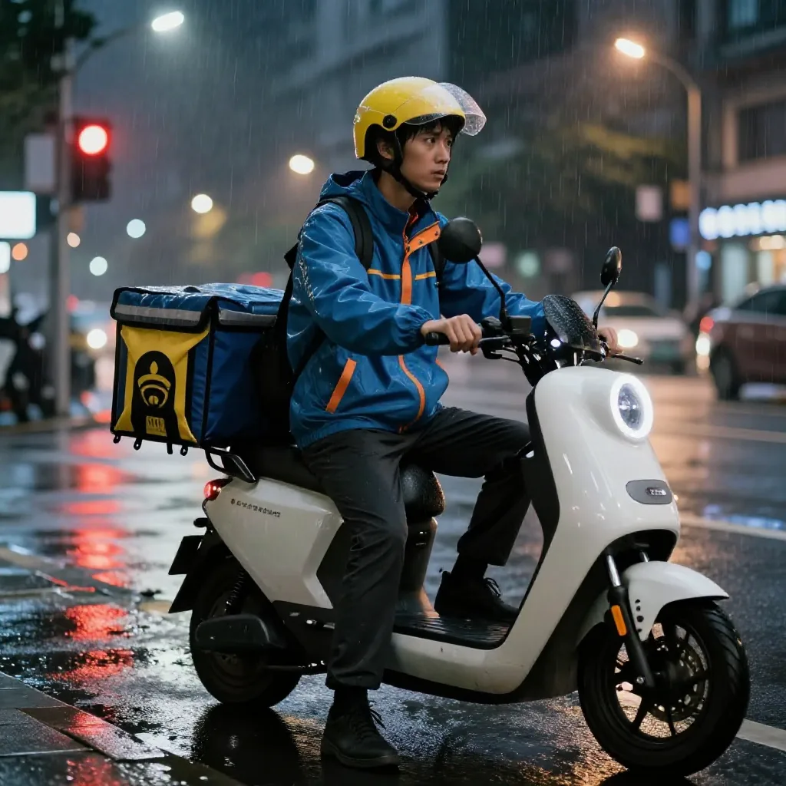
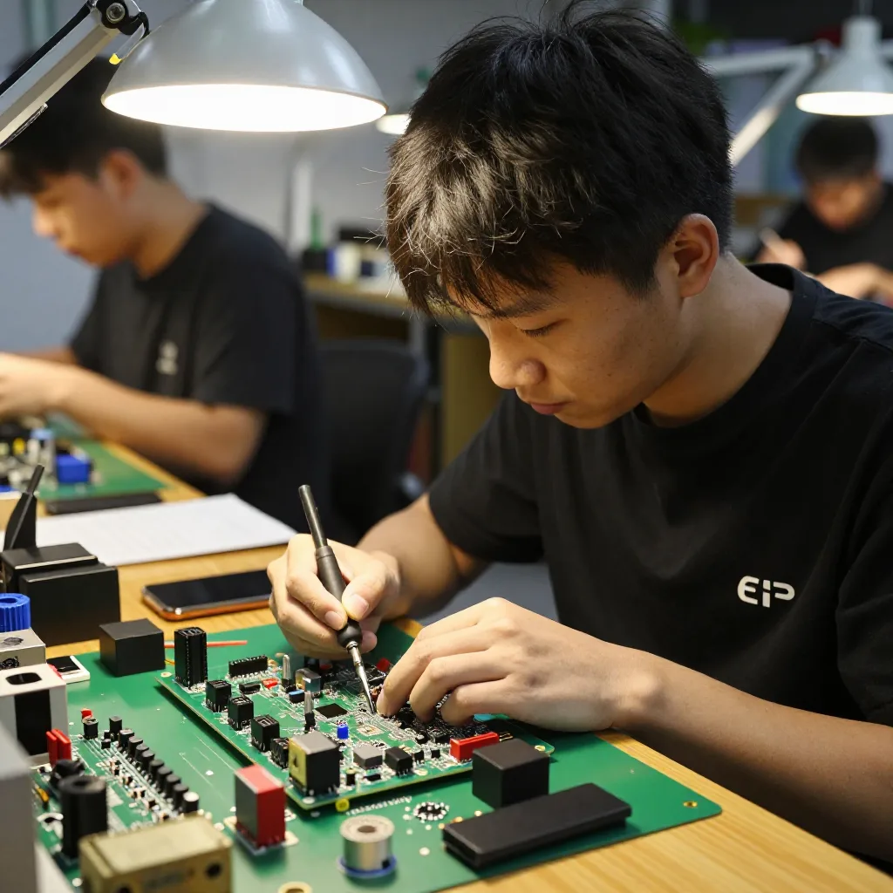
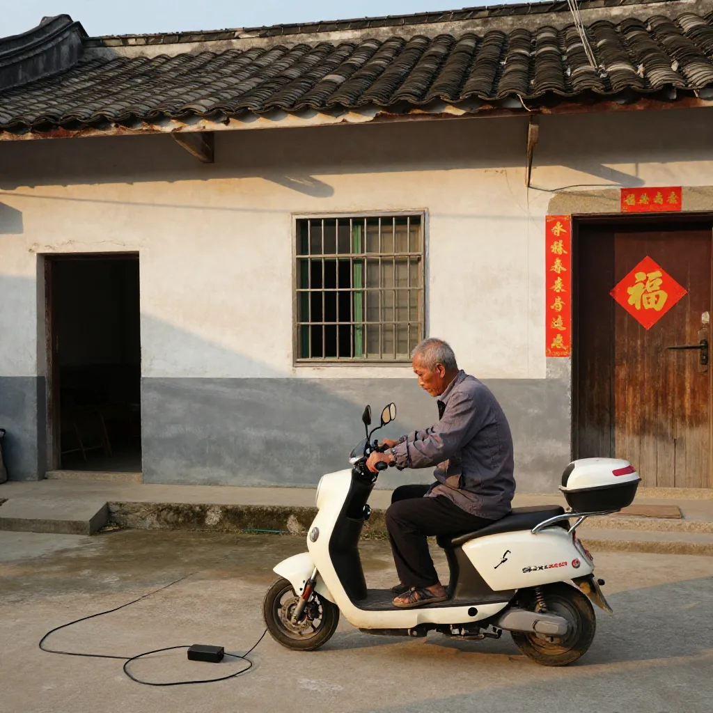
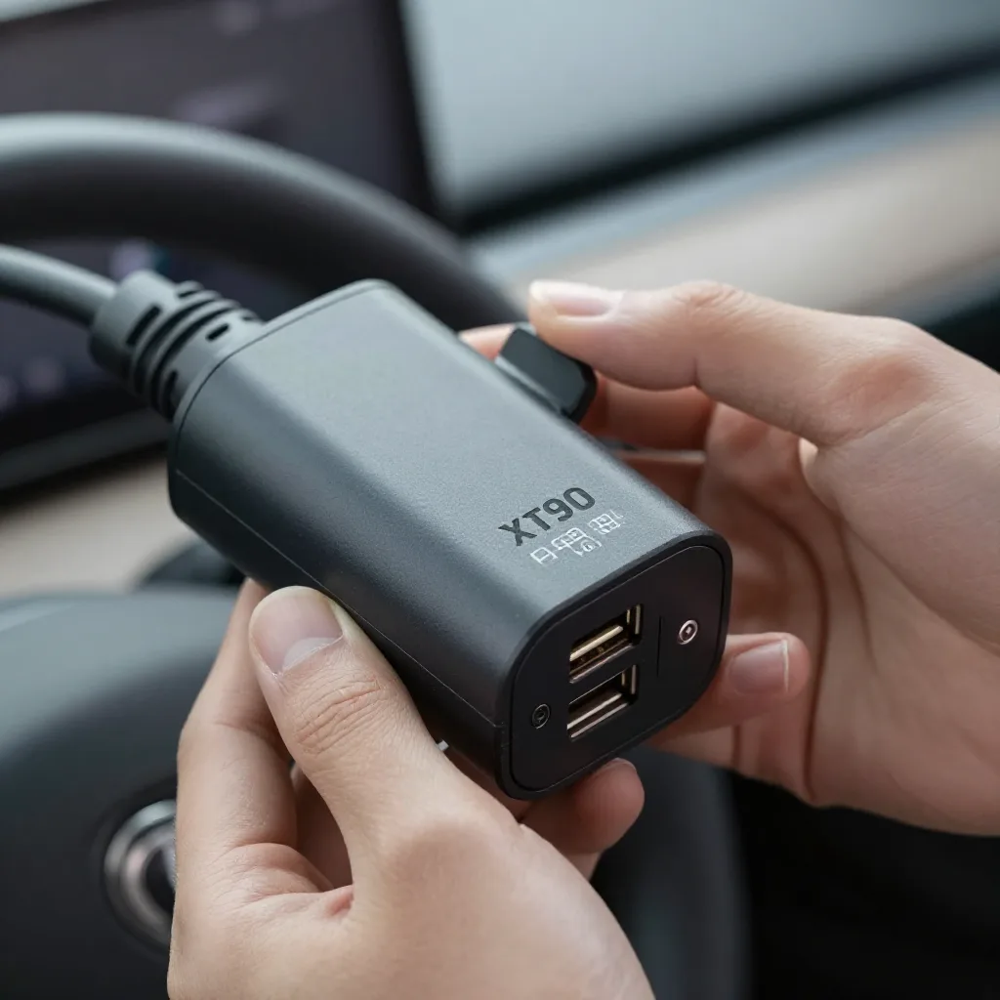

呢件嘢我系前几日先留意到嘅。
闲鱼上面一个卖家「小meng」，卖紧一件黑色嘅便携取电器，叫「电猫充电」。标价大概¥500-1500。一开睇，我以为又系边个华强北嘅野鸡嘢。
但当我拎大个相睇嘅时候——我嘅「生意鼻」即刻动咗。

一张密密麻麻嘅使用说明，上面写住：
适用品牌：九号、极核、小牛、台达、中兴、华为
电压范围：220V 到 380V
最大功率：7500W
接口：XT90
启动方式：扫码
升级接口：USB（可以OTA远程升级）
我当时即刻谂——呢件嘢，系专门畀外卖骑手用嘅。
我做咗26年贸易，呢种嗅觉系用时间换返嚟嘅。
讲个真实故事：2003年，我哋公司有个做手机配件嘅客户，佢自己组装外置电池。嗰时主流手机系诺基亚，电池唔耐用，但充电宝呢个概念仲未兴起。佢嘅电池卖到外蒙古、俄罗斯远东嗰啲地方，因为嗰边冬天零下30度，原装电池根本顶唔顺。
我嗰时就谂——呢种「极端场景」嘅产品，永远有人要。

一件产品嘅价值，唔系佢嘅科技有几高，唔系佢嘅功能有幾齊。而系佢能唔能够喺一个「边缘场景」入面，解决一啲「正路方案」解决唔到嘅问题。
呢件¥500嘅便携取电器，就系典型嘅「边缘场景产品」。
边个会买呢件嘢？我谂咗三个群体：
第一，外卖骑手、闪送、快递小哥。
呢班人日均跑100-200公里，经常去到陌生区域，搵唔到自己熟悉嘅换电柜。部车半路冇电嘅时候，你叫佢行返5公里去搵换电柜？外卖超时一分钟扣¥2，客人投诉再扣¥50。佢哋对「等待」嘅容忍度极低，对「即刻救命」嘅嘢极愿意畀钱。
一件¥500嘅嘢，如果可以帮佢喺关键嘅30分钟入面唔使等待，佢哋觉得平过叫一单外卖。

第二，城乡结合部、山区、偏远地区嘅用户。
我老家海丰，乡镇上充电桩覆盖率低得可怜。我叔父部电动车，半路冇电系常态。如果佢有一件呢种嘢，可以喺亲戚屋企、餐厅、便利店，借任何一个充电器续命，佢会觉得呢¥500系佢一年入面最抵嘅保险。
第三，房车旅行、户外露营爱好者。
呢批人已经买咗便携储能，但发现直接用储能充电动车效率低。呢件嘢可以将任何交流电来源（发电机、太阳能、家庭电）转成电动车充电——系「储能生态」嘅补充件。

但最令我兴奋嘅，系呢件嘢背后嘅「市场结构」。
你谂下：头部品牌（铁塔、e换电）做换电柜，净係做城市核心区；巨头（华为、特来电）做充电桩，净係做有商业回报嘅地方。呢件嘢填补嘅，恰恰係「冇人服务嘅场景」。
呢个市场结构，我好熟悉。1998年我做贸易，国企睇唔上嘅小订单，我哋接住做；2000年代电商崛起，传统渠道睇唔上嘅长尾SKU，我哋一个个拣；2008年金融危机，大厂收缩战线，剩低嘅外贸尾单我哋食晒；而家AI时代，大厂卷紧万亿参数嘅大模型，但真正落地嘅最后一公里——呢件¥500嘅小小取电器，恰恰就系我哋呢种「识用、识卖、识服务」嘅人嘅机会。
巨头做唔到嘅，往往就系我哋嘅机会。
有冇得做？我认真谂咗下，畀大家四个判断维度：
有利因素：
- 毛利率50%以上（BOM成本¥150-300，售价¥500-1500）
- 用户痛点真实存在，外卖骑手刚需
- 进入门槛低，迭代快（OTA升级能力可以让一件硬件持续升级）
- 跨境可以复制（东南亚、非洲电单车市场更大）
挑战：
- 安全隐患（7500W高功率，过充起火风险）
- 政策风险（电动车充电有国家标准 GB/T）
- 知识产权（多品牌协议破解可能侵权）
- 售后压力（电子产品故障率难控）
进入策略：
- MVP阶段：闲鱼+拼多多，月销100-200部试水
- 增长阶段：绑定外卖平台合作（美团、达达骑手装备店）
- 品牌阶段：建立「应急取电」品类认知，跨境出海东南亚
呢件嘢畀我最大嘅启示，系一种「创业态度」。
呢件产品嘅发明者，可能只系深圳华强北一个普通电子工程师，月入两万，养住一家四口。但佢对电动车充电协议嘅熟悉，对外卖骑手痛点嘅理解，对闲鱼流量嘅嗅觉——呢种「贴地」嘅能力，就系AI永远学唔到嘅嘢。
大模型可以做文案、做设计、做编程，但做唔到喺雨夜街头畀一个外卖骑手递上一部取电器。
呢种「应急」嘅生意，永远都有市场。问题只系你愿不愿意走落街、蹲落嚟、听住用家讲嘢。
我谂分享呢篇嘢畀大家，系因为——而家嘅经济环境，好多人谂紧「AI会唔会取代我」。但其实AI取代嘅，係「标准化嘅中段工作」。
真正取代唔到嘅，系：
- 听得明用家讲嘅「救命」呢两个字嘅人
- 蹲喺街头同骑手倾偈嘅人
- 喺巨头盲区搵到机会嘅人
- 愿意从¥500嘅小生意开始做起嘅人
呢啲，全部都系AI嘅盲区。
永远喺主流市场嘅边缘搵食，永远喺巨头嘅盲区掘金。呢句话，我送畀你。